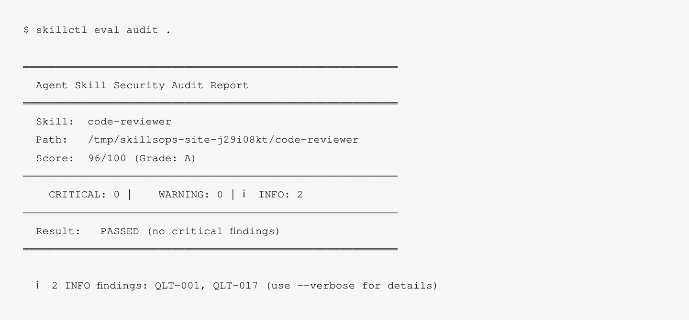
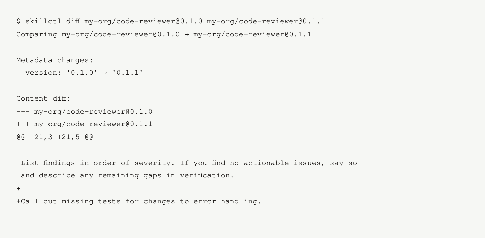
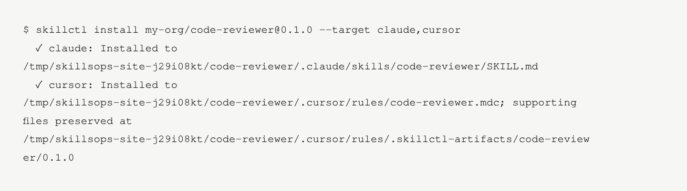

Agent skill management
Shared skills.
Fewer surprises.
Check risky instructions, track versions, and install agent skills across your team’s editors with one open-source CLI.

A team checklist.
Without the copy-paste drift.
Keep one source, check each update, and choose the version your team installs.
-
Write it once
Start with an existing skill or the included code-review example. Keep your instructions and supporting files together.
SKILL.md + skill.yaml -
Check the change
Validate the manifest, scan for risky patterns, and compare versions before you share an update.
validate / eval audit / diff -
Choose a version
Save the skill locally or publish to your registry. Install that version in the editors your team uses.
apply / install
See what you’re sharing.
Real commands, real output. These examples use the downloadable code-review skill.
Static checks flag known patterns. They do not guarantee safe execution.
Read the output
Review the exact instruction added in version 0.1.1.
Read the output
Choose targets by name. --target all detects editors already present in your workspace.
Install targets
- Claude Code
- Cursor
- Windsurf
- GitHub Copilot
- Kiro
More tools, integrations, and experimental features
Repeatable checks
eval report combines security findings and schema checks into a deterministic score. Add audit annotations to GitHub Actions.
Work from Claude Code
The optional MCP plugin provides five tools: validate, audit, bump, diff, and publish. Export and import archives for backup or migration.
Plugin documentationPolicy and telemetry experiments
Opt-in policy hooks and OpenTelemetry libraries need your own integration. Registry and agent runtimes do not call them automatically.
Policy integration detailsControl mapping and rollout models
Experimental control mappings do not certify compliance. Local rollout models do not route live traffic. Identity and lineage utilities also require integration.
For teams
Your internal playbooks.
Your infrastructure.
Start on your machine. Add a self-hosted registry when your team needs a shared place to publish and retrieve skills.
Skills often contain internal processes and review rules. Keep them on your own host or private cloud, with access you control.
Set up a registry- Control access
- Roles, namespaces, and scoped tokens for authors and CI.
- Trace registry changes
- A tamper-evident audit log records registry activity.
- Choose storage
- Filesystem or GitHub-backed storage, with portable exports.
Try one skill.
See the whole workflow.
Download the example and unzip it. Run the commands inside the code-reviewer folder.
Python 3.10+. No account, server, or model API key needed.
pip install skillsops
# Check the skill
skillctl validate
skillctl eval audit .
# Save this version locally
skillctl apply --local
# Install for Claude Code and Cursor
skillctl install my-org/code-reviewer@0.1.0 --target claude,cursorCreates .claude/skills/code-reviewer/SKILL.md and .cursor/rules/code-reviewer.mdc. Choose other editors with --target.
Already have a skill?
Point the audit at its folder: skillctl eval audit ./my-skill